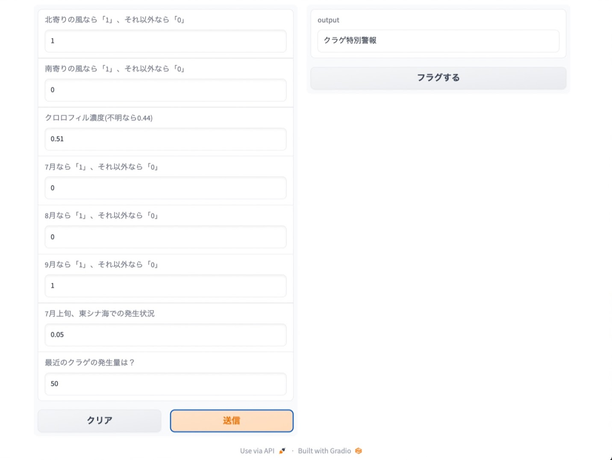

Service
Home / Service
サービス紹介
strobi Inc.は、クラゲによる沿岸産業の被害を防ぐ「リスクの見える化」と、
厄介者とされているクラゲの「未利用資源の有効利用」という2つの軸で事業を展開しています。
リスクの見える化と被害防止

クラゲみえるくん(仮称)
現状予測ができていないクラゲの大量発生を予測する、国内唯一のツールです。必要な情報を入力すれば、誰でも簡単にクラゲの発生予報を見ることができます。
発生危険度を4段階で評価し、その精度は73%と、天気予報の的中率83%にも引けを取らない精度を誇ります。
※現在、ユーザーテストにご協力くださる企業様、クローズドデータを使った共同開発にご協力くださる企業様や研究機関を募集しています。
未利用資源の有効利用

くらげクラフト
世界初*のクラゲを使ったクラフトビールです。日本近海で最も一般に見られるミズクラゲ(Aurelia sp.)を用い、コラーゲンも水分もまるっと閉じ込めました。
クラゲの持つ清涼的なイメージに合わせて、シンプルですっきりとした味わいに仕上げています。安全性の確認も食品分析により完了しています。
*弊社調べ
お問い合わせ
共同開発、ユーザーテスト、その他事業に関するお問い合わせはお気軽に以下のフォームからご連絡ください。
お問い合わせはこちら